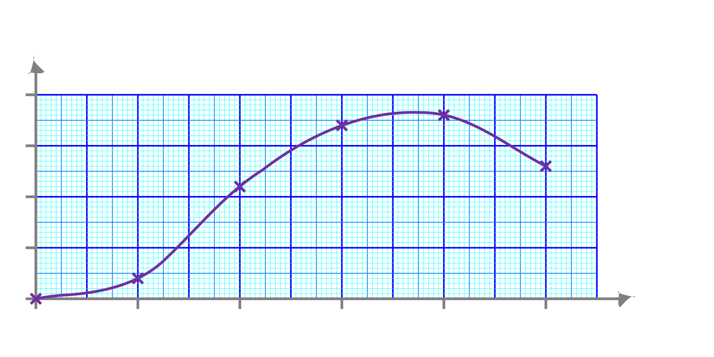

Exemple de consigne
Tracer le graphique montrant le nombre de fourmis près d'une source de nourriture au cours du temps.
Exemple de tableau de valeurs
| Temps (min) | 0 | 5 | 10 | 15 | 20 | 25 |
| Nombre de fourmis | 0 | 8 | 44 | 68 | 72 | 52 |
Exemple de graphique
Évolution du nombre de fourmis près d'une source de nourriture au cours du temps
